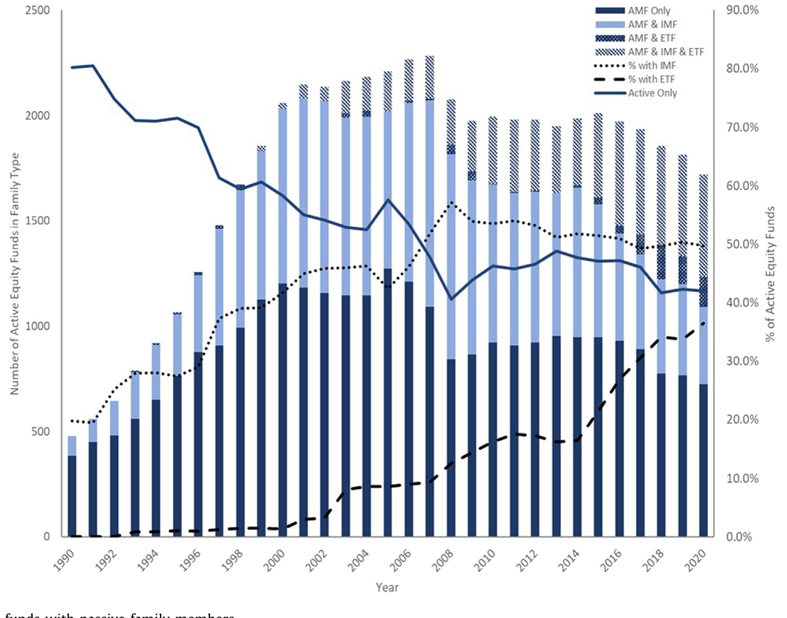
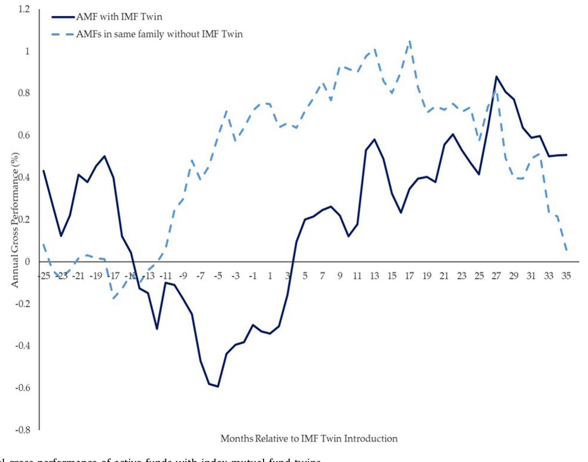
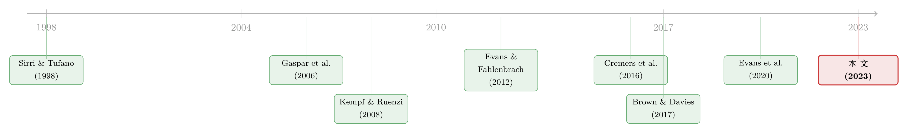

当「对手」就坐在自家屋檐下：被动基金如何逼着主动基金跑得更快
本文读的是 Dannhauser & Spilker III (2023, Journal of Financial Economics)：当一个基金家族里被动产品（尤其是指数共同基金）的比重越大，同一屋檐下的主动型基金反而跑得越好——家族资产里指数基金占比每上升一个标准差，主动基金相对晨星同类中位数的毛收益每月多出 3.1 bps、一年多出 37.2 bps。真正的驱动力不是钱，而是一种被放到「自家门口」的竞争。
1 一个让家族掌门人睡不着的问题
先讲一个数字。1990 年，美国市场上超过 80% 的主动型股票基金，待在「纯主动」(active-only) 的基金家族里——一整个家族只卖主动基金，没有任何被动产品。到了 2020 年，这个比例跌到了 42%。换句话说，过去三十年里，被动浪潮不只是把投资者的钱从主动基金搬到了指数基金，它还从家族内部，一寸一寸地改写了基金公司本身的形态。

Figure 1: Active funds with passive family members
这就给坐在家族顶层的管理者出了一道难题。继续做「纯主动」家族，是在向自家的主动基金经理表忠心——我们押注你能战胜市场；可这也意味着对整个行业的迁徙视而不见。反过来，顺势推出指数基金、ETF，固然能把外流的资产接回来，却可能让旗下那些主动经理感到被「背叛」：公司一边让我去打败市场，一边又亲手卖一个「打不败、只复制」市场的廉价替代品，摆在客户面前当镜子照我。富达 (Fidelity) 的掌门人 Abigail Johnson 上任之初，据《华尔街日报》报道，花了大量时间纠结的，正是这个决定。
注意，这篇论文研究的不是被动投资对整个市场、对股价质量、对公司治理的影响——那些已经被大量文献写过了。它问的是一个更内向、也更微妙的问题：当被动基金住进了主动基金的同一个家，对这个屋檐下的主动基金，到底是福是祸？
于是，全篇就围绕一个核心张力展开：把被动产品引进家族，对自家的主动基金，是「拖累」还是「鞭策」？作者的答案出人意料地干脆——是鞭策。而把这个「鞭策」一层层拆开，正是这篇论文最漂亮的地方。
2 第一步：先把事实摆出来——同一个家里，被动越多，主动越强
要回答这个问题，首先得有一把尺，量出「家族里被动基金有多少分量」。作者沿用 Cremers et al. (2016) 在「经济体层面」用过的口径，构造了核心变量 %FamIMF（家族指数共同基金资产占家族总资产的比例）和 %FamETF（家族 ETF 资产占比）。整篇论文最关键的一点是：指数共同基金 (index mutual fund, IMF) 和 ETF 自始至终被分开看。原因在于，二者结构迥异——IMF 和主动基金共用同一套组织与收费结构，还能进退休账户的菜单；ETF 则是 1993 年才出现的「混血儿」，在交易所挂牌、费率极低、大多不收 12b-1 的营销费，而且它的交易主要由授权参与人 (authorized participant, AP) 完成。把两者揉在一起，只会把信号搅浑。
数据来自 CRSP 共同基金数据库，1990–2020 年，最终样本是 650,519 个主动基金—月观测，每只基金至少 1000 万美元资产、费率与收益非缺失。家族归属是作者手工解析、手工校验出来的（连「ADAMS HARKNESS HILL」被误录成「ADAM HARKNESS HILL」这种细节都修过）。在全部观测里，41.4% 的主动基金—月，家族里同时存在被动产品。
有了尺，接着就是那条主回归。被解释变量是「毛业绩」(gross performance)——基金毛收益减去晨星同类—当月的中位数（沿 Evans et al., 2020）：
这套固定效应的设计是有讲究的。α_i（基金固定效应）回应了一个最自然的内生性质疑：会不会是「天生就更厉害的家族」既爱上被动、旗下主动经理又恰好更强？基金固定效应把这种不随时间变的「家族天赋」吸掉了。γ_{s,t}（同类—日期固定效应）则把「整个晨星品类里被动有多猛」「整个行业被动有多猛」这些更宏观的竞争压力剥离出去——剩下的，才是家族内部这点被动竞争的净效应。两个关键自变量都标准化成了均值 0、标准差 1，好让 IMF 和 ETF 的效应可以直接掰着比。
结果是：%FamIMF 的系数显著为正。家族指数基金占比每上升一个标准差，主动基金相对晨星同类中位数的毛收益每月多 3.1 bps，折成年化是 37.2 bps。 而 %FamETF 的系数不显著。为了排除「这是不是垫底基金均值回归制造的假象」，作者把样本进一步收紧到「被动决策前连续三年都稳居同类毛业绩前三分位」的基金，结果依旧稳健。
事实摆完了，反而更让人困惑：被动基金以低成本提供 beta，本该是把主动基金往墙角逼的对手，怎么主动基金不降反升？于是，一个自然的问题是——到底是什么机制在起作用？
3 三条岔路：竞争、道德风险，还是「分家产」
文献给了三个候选机制。作者像剥洋葱一样，一条条试。
第一条，竞争 (competition)。 Cremers et al. (2016) 主张被动投资对主动经理施加竞争压力。作者把这个想法搬进家族内部，借鉴 Evans & Fahlenbrach (2012) 做了一个「孪生」(twin) 研究：所谓孪生，是指同一家族、同一晨星品类—月里出现的一只被动基金——它就是杵在你正对面、抢同一拨客户的那个对手。控制住 Evans et al. (2020) 强调的家族层面竞争激励（用家族—日期固定效应）以及基金固定效应之后，作者发现：有了 IMF 孪生兄弟的主动基金，风格调整后的毛业绩相对家族里其他主动基金更高。更妙的是，这些基金确实「更卖力」了——异常主动份额 (abnormal active share, 见 Cremers & Petajisto, 2009; Cremers & Pareek, 2016) 上升，R²（衡量「抄指数」程度，Amihud & Goyenko, 2013）下降。被盯上的经理，把抽屉里那只「偷偷抱指数」的手收了回去，开始真刀真枪地做主动。
但真正关键、也最像石川会拍案的一步，是作者把孪生基金诞生前后的业绩画了出来。

Figure 2: Annual gross performance of active funds with index mutual fund twins
如图 2 所示，那些「日后将迎来一个 IMF 孪生对手」的主动基金，在孪生基金推出前 18 个月就开始跑输同类。然后，在孪生基金推出前 6 个月，它们的业绩突然回升——而这 6 个月，恰好是行业里推出一只新基金所需的典型筹备时间。换句话说，家族顶层早在正式挂牌之前，就已经在用「我要给你配个对手」的潜台词敲打这个掉队的经理了。到孪生基金推出 24 个月后，这批被「下了战书」的主动基金，年化毛业绩做到了 53 bps；相对孪生推出前 6 个月，提升超过 100 bps。而那些没被配对手的同家族主动基金，同期年化做到 73 bps，只提升了 26 bps——一个「孪生威胁」本身，就成了激励。
这背后的逻辑被一个 probit 模型坐实了：孪生基金会不会被推出，与该主动基金毛业绩的绝对水平无关，却由它在家族内部的业绩排名决定。 也就是说，家族掌门人精准地把「孪生威胁」这把刀，架在了家里垫底的那个经理脖子上——用直接的家族内被动竞争，去激励掉队者，顺便震慑还没轮到的人。
这一招的味道，和 Kempf & Ruenzi (2008) 笔下「家族内部锦标赛」如出一辙：经理们为争夺家族的营销预算而内斗。只不过这里的「奖品」从广告费换成了「免于被配一个孪生对手羞辱」。关于基金家族内部这种你死我活又彼此勾连的张力，可参见《当「拉抬净值」从明星基金经理转移到了他的同事身上》。
4 然后，反转出现：竞争是有上限的——道德风险
如果故事到这里就结束，那未免太一边倒了。Brown & Davies (2017) 的道德风险 (moral hazard) 模型提了个醒：当被动产品太成功，主动经理可能在某个临界点上干脆「躺平」(shirk)。怎么把这个看不见的「躺平倾向」量出来？作者很巧妙地把费用拆成了两块：
- 被动费 (passive fee component)：家族里指数基金（或 ETF）的平均费率，对应 Brown & Davies (2017) 模型里付给经理的「分散化服务」那一份；
- 主动费溢价 (active fee premium)：同一家族里主动基金平均费率减去被动基金平均费率，对应「主动服务」那一份。
理论的预言是：被动费越低，道德风险越大——当被动费下降，经理的努力激励随之减弱，所以被动费和主动基金业绩之间应当是正相关。数据印证了这一点：主动基金业绩与基于指数基金费率构造的两个费用分量都显著正相关；而基于 ETF 费率的两个分量，系数都不显著。再往里看，主动费与 IMF 占比的交互项显著为正——意思是，在给定的指数基金占比下，给主动经理更高的报酬，能缓解道德风险。
于是这一节把第 3 节的乐观情绪往回拽了半步：家族内的指数基金竞争确实在激励主动经理，但这种激励是有天花板的，会被道德风险侵蚀。竞争与躺平，是同一枚硬币的两面。
5 那笔「白来的钱」呢？——资源机制被证伪
还剩第三条岔路。Brown & Wu (2016) 认为家族成员之间会共享资源与技能。被动基金的特点是「躺着收费」，它给家族的公共财务池子贡献了费用，却几乎不向池子要回报——会不会，是这笔「白来的钱」在补贴主动基金、买来了好业绩？
作者把「指数基金为支撑主动资产所能提供的财务资源」精确地算了出来：用费率乘以指数基金（或 ETF）资产、再除以家族主动资产做归一。然后放进风格—日期固定效应回归里。结果是：财务资源的水平、以及它与 IMF 占比的交互项，都不显著。 而 IMF 占比的系数依旧坚挺地为正。
这是一个被「证伪」的机制，却恰恰是论文最有说服力的地方：把钱这条解释排除掉，才反衬出「指数基金的存在本身」——而非它生出的钱——才是业绩提升的源头。顺带一提，连证券借贷 (securities lending) 这条「外财」也被堵死了：作者估算，2018–2020 年间，证券借贷净收入只占指数基金（ETF）所产生管理费的 0.26%（0.426%），微不足道，且其大头按 McCullough (2018) 早就还给了基金投资者。
不过，资源这条路也不是全无痕迹。在排除「财务资源」之后，作者发现指数基金确实给家族贡献了一种非现金的资源——交叉交易 (cross-trading) 的机会。沿 Evans et al. (2020) 用月度持仓数据构造的三个代理变量显示：IMF 占比越高的家族，旗下主动基金的交叉交易越多；而主动基金与家族内指数基金的交叉交易，占了它全部可观测交叉交易的 30% 以上。把样本收紧到持仓重叠最大的那批（有 IMF 孪生兄弟的主动基金），业绩与交叉交易之间是正相关的。
6 还有一个副产品：被动基金「驯服」了资金流
讲到这里，核心机制（竞争为主、道德风险设限、资源被证伪、交叉交易有点正贡献）已经闭环。但论文还顺手回答了一个相邻的问题：被动基金会不会改变主动基金投资者的性质（Massa, 2003）？
逻辑链条是这样的：家族内部换仓很容易（Sirri & Tufano, 1998; Hortaçsu & Syverson, 2004），而被动基金又特别吸引那些「认收益、追业绩」的投资者（Dannhauser & Pontiff, 2019），于是这批最敏感的钱会被指数基金吸走。结果，留在主动基金里的投资者更「稳」了：作者证实，IMF 占比越高的家族，旗下主动基金的资金流—业绩敏感度 (flow-performance sensitivity) 更低、资金流波动更小。
这就构成了一个微妙的反差：一边是更低的费用、更稳的投资者基础（按理都会削弱经理努力的动机），另一边却是更好的业绩。两股力量相抵，最终胜出的还是那个结论——当指数基金在家族里变得更显眼，主动经理反而跑赢了。 至于费用，论文也澄清了一个可能的误会：被动占比上升并没有让主动基金涨价，相反，IMF 与 ETF 越多，同类调整后的总费率越低——而且二者压的部位还不一样：指数基金压的是管理与运营费，ETF（几乎不收营销费）压的是 12b-1 费。
关于「被动到底占了多大分量」这个看似简单、实则水很深的计量问题，可参见《你以为被动投资只占 16%？它其实是这个数的两倍》；而关于基金「对投资者许下的承诺」与家族内资本配置的张力，可参见《食言的代价：当一只基金，没能守住它在招股书里许下的承诺》。
7 文献脉络
把这篇论文放回它生长的那条藤上，脉络其实很清楚。
最早，人们关心的是家族作为一个整体如何运作：Sirri & Tufano (1998) 指出家族内部换仓的搜寻成本很低，钱在「自家屋檐下」流动格外顺畅——这为「家族内竞争」埋下了伏笔。接着，一支文献开始揭露家族内部并不总是和谐：Gaspar et al. (2006) 发现家族会「偏心」，通过策略性的交叉补贴扶持明星基金；Bhattacharya et al. (2013) 记录了家族内相互持有带来的利益冲突；Kempf & Ruenzi (2008) 则把家族内部刻画成一场争夺营销预算的「锦标赛」。竞争与勾结，是这条线一以贯之的两面。

另一条线是方法论的武器：Evans & Fahlenbrach (2012) 用「孪生基金」把同质资产配上不同结构，做出了干净的对照——这正是本文识别竞争机制的核心工具。再往后，被动浪潮自己成了主角：Cremers et al. (2016) 在「经济体层面」、Sun (2021) 在「风格层面」分别量出了被动对主动的竞争压力；Brown & Davies (2017) 给出了主动管理中的道德风险模型；Evans et al. (2020) 则系统刻画了基金家族内部的竞争与合作。
本文 (2023) 站的位置，恰好是这两条线的交汇点：它把「家族内部的张力」与「被动浪潮的冲击」焊在了一起，证明 Cremers 与 Sun 在更宏观层面发现的竞争效应，在家族内部还有一份额外的、可被掌门人主动操纵的增量。
8 评论与延伸（Q&A + 研究方向）
(a) 几个可能的疑问
Q：基金固定效应 + 同类—日期固定效应，真的能挡住「会上被动的家族本来就更强」这种内生性吗？
这是全文识别的命门，作者用了三道防线：基金固定效应吸收不随时间变的家族/经理天赋；同类—日期固定效应剥离宏观与品类层面的被动竞争；再加上「剔除全程纯主动的家族」「只看被动决策之后的时段」「限定决策前连续三年居前三分位」等子样本。它挡得住「水平差异」，但挡不住随时间变化的家族策略——比如某家族在 2015 年同时换了 CIO 又上了指数基金，二者捆在一起，固定效应无能为力。这是 DiD 类设计的通病，论文没有一个真正外生的冲击。
Q：3.1 bps/月，会不会只是「毛收益」的把戏，投资者其实拿不到？
关键就在「毛」(gross) 字。论文有意用毛业绩去识别经理努力这个机制——净收益会被费用污染。但对投资者福利而言，确实要看净额。好在论文同时证明被动占比越高、同类调整费率越低，所以净收益的方向大概率一致；只是 37.2 bps 的年化增量里，投资者到手多少，论文没有把这本账算到底。
Q：为什么 ETF 通篇都「不显著」，这本身是不是一个结果？
是，而且是个有意思的结果。作者一开始就预判 ETF 不会有效应：ETF 的交易主要由 AP 在二级市场完成，它和主动基金不抢同一拨「会在家族菜单里挑来挑去」的零售/退休账户客户。所以「IMF 显著、ETF 不显著」恰恰支持了竞争机制——起作用的是那个真正贴脸、抢同类客户的对手，而不是泛泛的「被动」。
Q：把业绩归功于「竞争」，会不会其实是交叉交易在偷偷补贴？
论文承认交叉交易有正贡献（与 IMF 孪生兄弟交易越多、业绩越好，且占全部交叉交易 30% 以上），但它不是主力：资源/财务那条路被明确证伪，而努力的直接证据（异常主动份额上升、
R²下降）很难用「交叉交易补贴」来解释。两者更像并存，竞争是主线。
Q：事件研究里「提前 18 个月就跑输、提前 6 个月回升」，会不会是均值回归？
这正是作者最担心的，所以才补了「连续三年居前三分位」的子样本——把垫底基金的机械均值回归排除后，效应仍在。而且 probit 显示孪生推出由家族内排名而非业绩绝对水平驱动，这个「相对排名」的触发逻辑，是单纯均值回归讲不出来的。
Q：这对「主动管理已死」的大叙事意味着什么？
一个温和的反例。论文的潜台词是：被动浪潮对主动经理不是纯粹的坏消息——被动产品进了家门，反而通过竞争把主动经理逼出了更高的努力。行业向被动迁移，对主动经理及其家族，并非全盘皆输。
(b) 几个可能的研究问题与提案
1. 把这套「家族内孪生竞争」搬到公司债基金。
【经济故事】公司债基金的业绩很大程度来自流动性择时与一级市场配售，而被动债券指数基金（及债券 ETF）近十年爆发式增长。如果家族内出现一个「债券指数孪生兄弟」，主动债基经理会不会也被逼着提高换手、压低对基准的拥抱度？信用市场的摩擦更大，竞争效应可能更强、也可能被流动性约束吞掉。
【可行性】中。数据上 CRSP + Morningstar 可识别债券指数基金/ETF，持仓可用 eMAXX 或 Morningstar 持仓；难点在于「晨星品类」对债券的划分较粗，孪生定义需要重新打磨。
2. 外资持有人会不会改变这套家族内竞争的强度？ 【经济故事】跨境基金家族（如同时在美、欧、亚发行的巨头）里，被动产品的客户结构与本土家族不同，外资份额高的家族，资金流对业绩更敏感还是更钝？如果外资是「认收益」的快钱，被动孪生对它的「驯服」效应应当更强。 【可行性】中偏低。需要把家族层面的投资者地域结构识别出来，公开数据稀缺；可借道 13F 与跨境基金注册地拼接，识别偏弱，更适合做描述性证据。
3. 资金流波动的下降，是否真的转化为对持仓证券流动性的改善？ 【经济故事】本文证明 IMF 降低了主动基金的资金流波动。顺着这条线，主动基金被迫的「流动性驱动交易」应当减少，从而对其重仓股/重仓债的价格冲击下降。这把「家族结构」和「市场流动性」直接连了起来。 【可行性】高。资金流波动可由本文方法构造，价格冲击可用日内或 TRACE（债券）数据估计，识别清晰、数据可得，是一个干净的延伸。
4. 道德风险的「临界点」能不能被直接定位？ 【经济故事】Brown & Davies (2017) 预言存在一个让经理「躺平」的门槛。本文用费用分量间接验证了它，但没有把那个门槛画出来。能否用非参数/门槛回归，找到被动占比超过某个水平后努力激励反转的拐点？ 【可行性】中。数据齐备，难在门槛模型的识别与外生性——拐点本身可能内生于家族策略，需要工具或断点设计辅助。
9 我的判断
这篇论文最大的贡献，是把一个被反复讨论的宏观命题——「被动冲击主动」——拉进了家族这个微观盒子里，并且漂亮地证明：在家族内部，被动不是主动的掘墓人，而是它的鞭子。尤其是那条事件研究曲线（推出前 18 个月跑输、前 6 个月回升、24 个月后多赚逾 100 bps），加上 probit 里「按家族内排名而非业绩水平」触发孪生的发现，把「家族掌门人主动用被动竞争去敲打掉队者」这个故事讲得活灵活现——这是把激励、内部政治与产品战略串在一起的一笔好文章。它对机制的处理也克制而诚实：竞争为主，道德风险设限，资源机制被干脆证伪，交叉交易只给一点正贡献。
我的担忧仍在识别。固定效应能挡住水平差异，挡不住随时间共同变化的家族策略——一个家族同时改组投研团队又推出指数基金，这种捆绑式变化会让 %FamIMF 的系数捎带上「投研升级」的功劳，而论文没有一个真正外生的冲击（比如某次税法或监管变动强行改变了被动产品的供给）来切断这种共变。其次，全篇落在毛业绩上以求识别经理努力，这没错，但「这对投资者到底意味着多少净收益」的那本账，还差临门一脚。
后续我最想看到的，是两件事：一是找一个外生冲击把内生性彻底钉死，哪怕样本变小；二是把这套逻辑搬到公司债与信用市场——那里摩擦更大、流动性更脆，家族内被动孪生的竞争效应会被放大还是被吞没，是一个真正未知、也更贴近当下债券 ETF 浪潮的问题。
参考文献
- Amihud, Y., Goyenko, R. (2013). Mutual fund's R² as predictor of performance. Review of Financial Studies 26, 667–694.
- Bhattacharya, U., Lee, J.H., Pool, V.K. (2013). Conflicting family values in mutual fund families. Journal of Finance 68, 173–200.
- Brown, D.C., Davies, S.W. (2017). Moral hazard in active asset management. Journal of Financial Economics 125, 311–325.
- Brown, D.P., Wu, Y. (2016). Mutual fund flows and cross-fund learning within families. Journal of Finance 71, 383–424.
- Cremers, K.J.M., Petajisto, A. (2009). How active is your fund manager? A new measure that predicts performance. Review of Financial Studies 22, 3329–3365.
- Cremers, M., Ferreira, M.A., Matos, P., Starks, L. (2016). Indexing and active fund management: International evidence. Journal of Financial Economics 120, 539–560.
- Dannhauser, C.D., Spilker III, H.D. (2023). The modern mutual fund family. Journal of Financial Economics 148, 1–20.
- Evans, R., Fahlenbrach, R. (2012). Institutional investors and mutual fund governance: Evidence from retail–institutional fund twins. Review of Financial Studies 25, 3530–3571.
- Evans, R.B., Prado, M.P., Zambrana, R. (2020). Competition and cooperation in mutual fund families. Journal of Financial Economics 136, 168–188.
- Gaspar, J.-M., Massa, M., Matos, P. (2006). Favoritism in mutual fund families? Evidence on strategic cross-fund subsidization. Journal of Finance 61, 73–104.
- Kempf, A., Ruenzi, S. (2008). Tournaments in mutual-fund families. Review of Financial Studies 21, 1013–1036.
- Massa, M. (2003). How do family strategies affect fund performance? When performance-maximization is not the only game in town. Journal of Financial Economics 67, 249–304.
- Sirri, E.R., Tufano, P. (1998). Costly search and mutual fund flows. Journal of Finance 53, 1589–1622.
- Sun, Y. (2021). Index fund entry and financial product market competition. Management Science 67, 500–523.